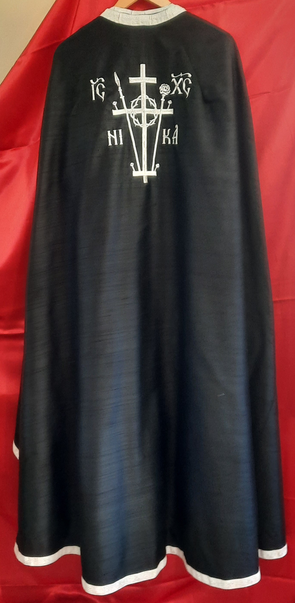
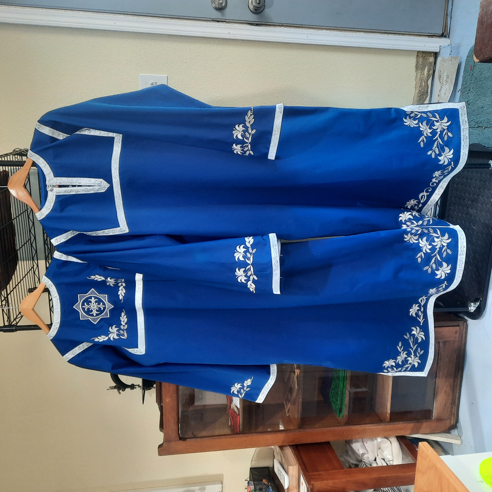
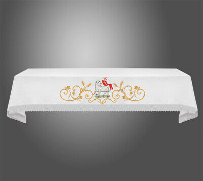
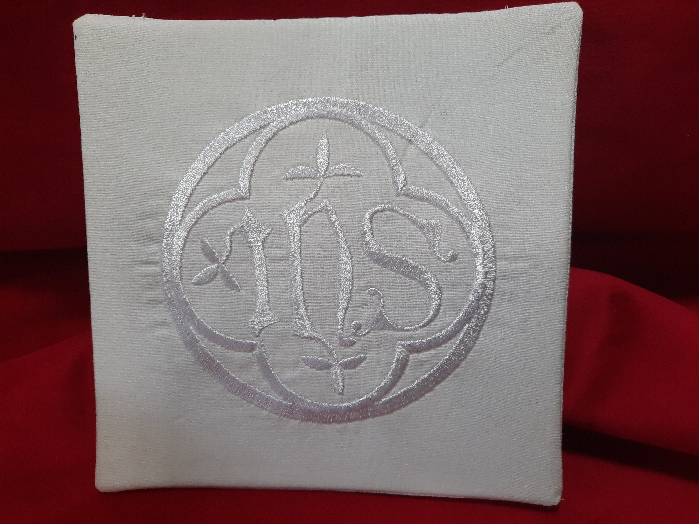

Priestly Vestments
Eastern and Western styles available.
Diaconal Vestments
A diaconal vestment set. It includes an orarion, epimanikia, and sticharion. Eastern and Western styles available.

Server's Sticharion
The vestments worn by acolytes during the Divine Liturgy. Multiple colors available. Eastern and Western styles also available.
Altar Paraments
Altar Cloths
Chalice Palls
Chalice palls for use in Western liturgies.
Chalice Veils
Chalice veils for use in Western liturgies